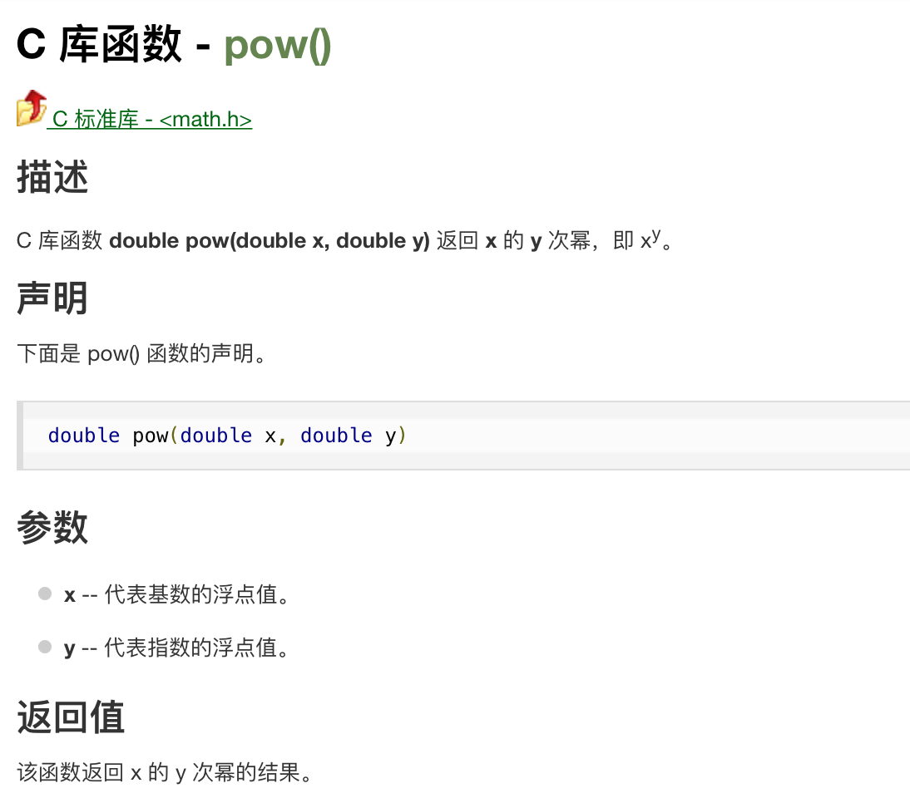
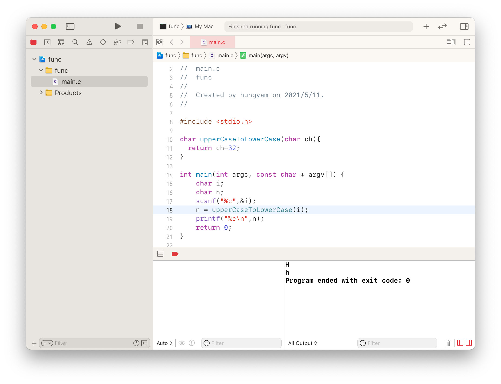
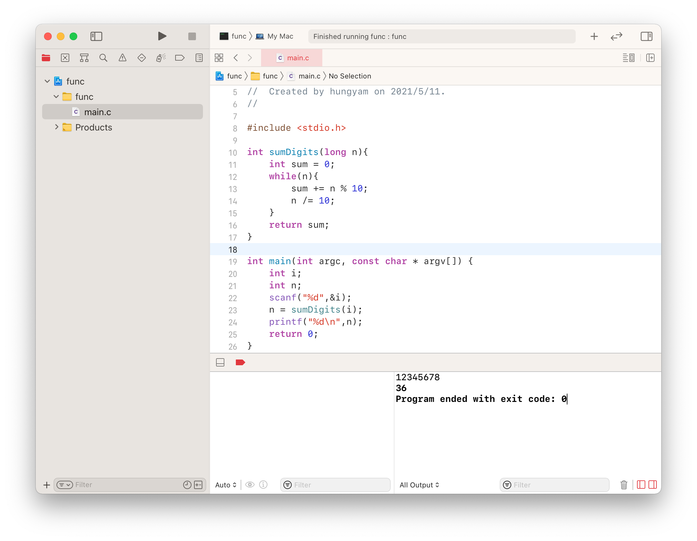
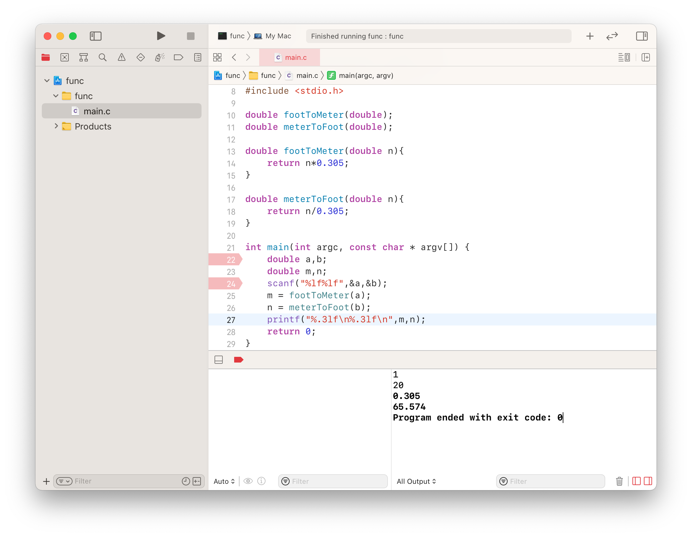
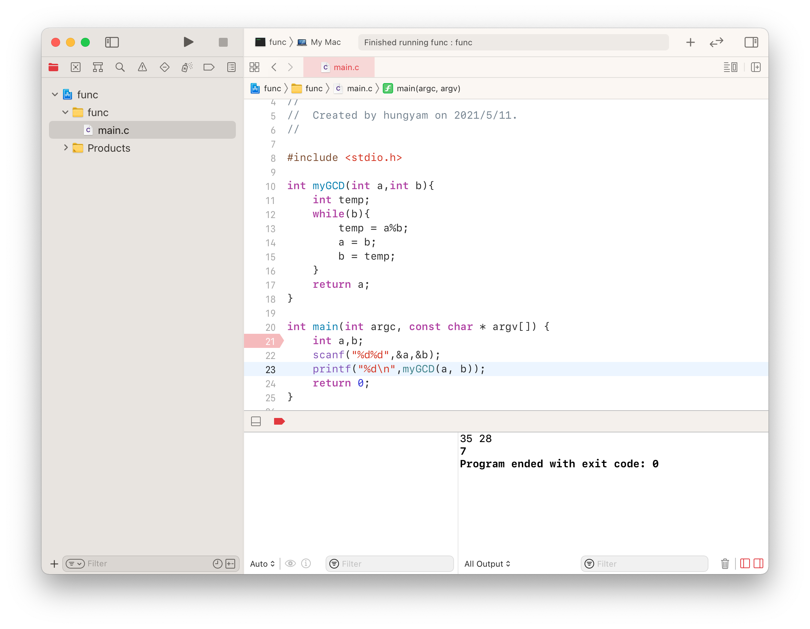
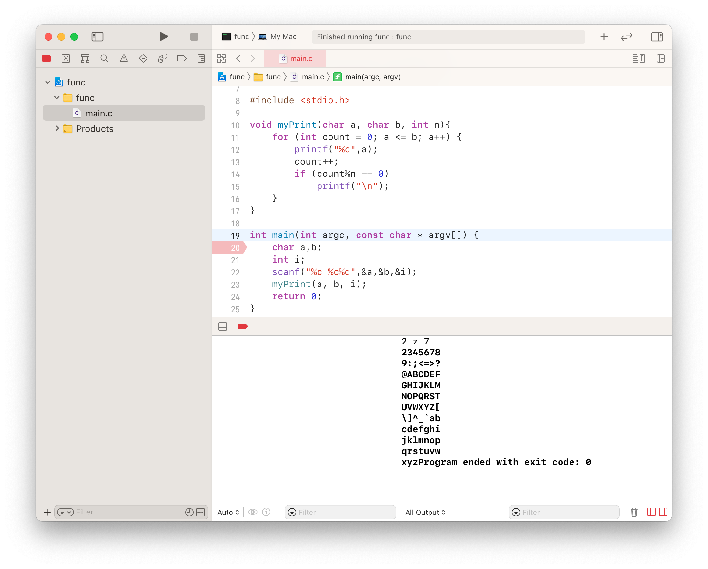
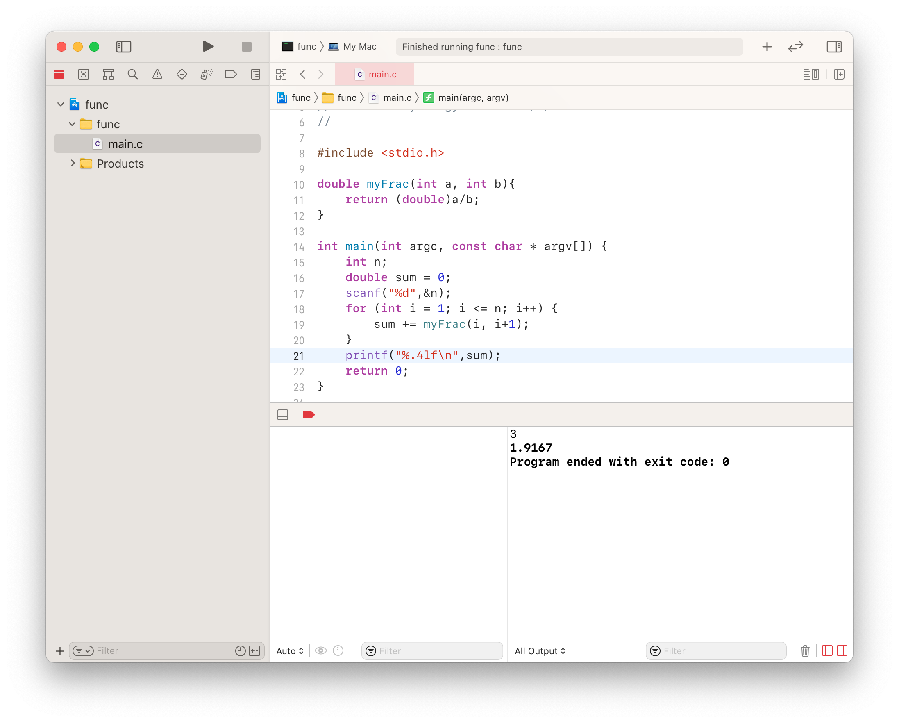
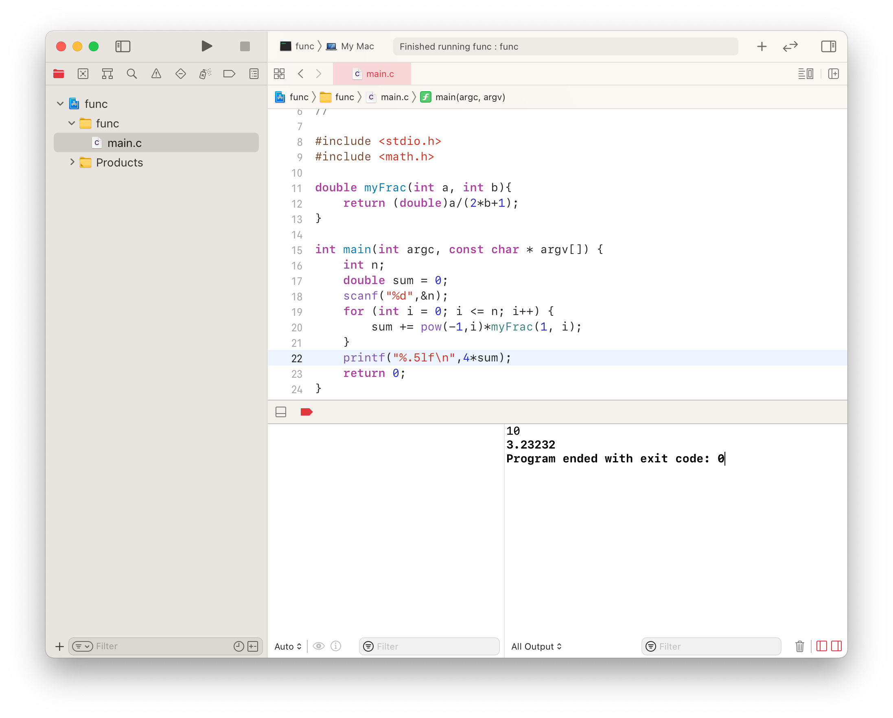

solutionSetWeek11 简单描述 这周的题目为函数定义，首先须先了解函数的概念以及函数是如何定义的
参考资料 ：什么是函数 、函数的定义
简单来说函数的定义为：
1 2 3 4 5 6 返回类型 函数名(参数类型1 参数名1 ,参数类型2 参数名2 , ......){ return 返回的值; }
函数封装了某些特定的功能，当你传入不同的参数，它能够进行约定的计算，并返回计算结果。
像是之前学到的math.h中的pow()
它的定义为double pow(double x, double y)，它就是一个 有两个浮点参数 且返回值为浮点数的函数
下图是他在文档中的详细解释：

定义了函数是需要由main函数来调用的，函数库不能独立运行，matrix提交系统隐藏了main.c，即不需要我们实现main函数，我们只需要在.h函数库文件或.c函数定义文件 中实现某一特定函数的定义与功能的封装即可
接下来是题解:
5.1 Converting an uppercase letter to lowercase Solution:
1 2 3 char upperCaseToLowerCase (char ch) return ch+32 ; }
ASCII知识点
Testing:

5.2 Summing the digits in an integer Solution:
1 2 3 4 5 6 7 8 int sumDigits (long n) int sum = 0 ; while (n){ sum += n % 10 ; n /= 10 ; } return sum; }
整数分割，利用%10、\10
Testing:

5.9 Conversions between feet and meters Solution:
1 2 3 4 5 6 7 8 9 #include "source.h" double footToMeter (double n) return n*0.305 ; } double meterToFoot (double n) return n/0.305 ; }
Testing:

5.10 Computing GCD Solution:
1 2 3 4 5 6 7 8 9 10 11 12 13 14 15 16 17 18 #include <stdio.h> int myGCD (int a,int b) int temp; while (b){ temp = a%b; a = b; b = temp; } return a; } int main () int a,b; scanf ("%d%d" ,&a,&b); printf ("%d\n" ,myGCD(a, b)); return 0 ; }
Testing:

5.12 Displaying characters Solution:
1 2 3 4 5 6 7 8 9 10 11 12 13 14 15 16 17 18 19 20 21 #include <stdio.h> void myPrint (char a, char b, int n) for (int count = 0 ; a <= b; a++) { printf ("%c" ,a); count++; if (count%n == 0 ) printf ("\n" ); } } int main () char a,b; int i; scanf ("%c %c%d" ,&a,&b,&i); if (a < b) myPrint(a, b, i); else myPrint(b, a, i); return 0 ; }
Testing:

5.13 Summing series Solution:
1 2 3 4 5 6 7 8 9 10 11 12 13 14 15 16 #include <stdio.h> double myFrac (int a, int b) return (double )a/b; } int main () int n; double sum = 0 ; scanf ("%d" ,&n); for (int i = 1 ; i <= n; i++) { sum += myFrac(i, i+1 ); } printf ("%.4lf\n" ,sum); return 0 ; }
Testing:

5.14 Computing series Solution:
1 2 3 4 5 6 7 8 9 10 11 12 13 14 15 16 17 #include <stdio.h> #include <math.h> double myFrac (int a, int b) return (double )a/(2 *b+1 ); } int main () int n; double sum = 0 ; scanf ("%d" ,&n); for (int i = 0 ; i <= n; i++) { sum += pow (-1 ,i)*myFrac(1 , i); } printf ("%.5lf\n" ,4 *sum); return 0 ; }
Testing:

If you like this blog or find it useful for you, you are welcome to comment on it. You are also welcome to share this blog, so that more people can participate in it. If the images used in the blog infringe your copyright, please contact the author to delete them. Thank you !